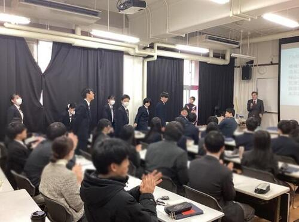
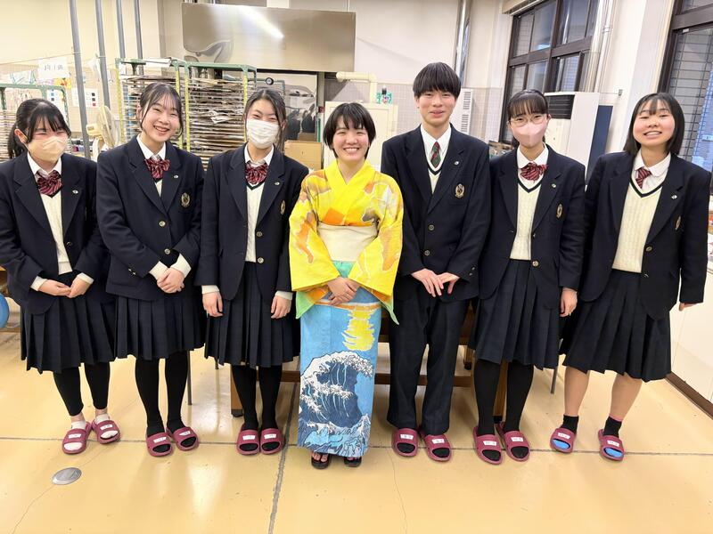
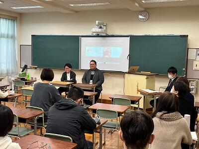

2023年８月１日以降のブログをすべて時系列に掲載しています。
こちらの記事の続きです。
韓国の全南科学高等学校の生徒と交流したクラスの国際交流委員が、その様子をまとめてくれました。

『お互いの研究を発表し、意見を深め合いました。ワックスワームという蜂の巣を消化できる虫がプラスチックをも消化できるという研究結果がとても興味深かったです。プラスチックは微生物の力では分解できないので、もしワックスワームがプラスチックを消化でき、それによるワックスワームへの害がないのであれば、プラスチックの環境問題の解決につながるのではないかと思いました。』
『科学について英語で交流するのはかなり難しかったですが、それでも事前にある程度知識を入れておけば何とかやり取りできると感じました。だから、科学の分野を英語で交流する際でも難しいから無理と決めつけず、積極的に学んでいこうと思いました。』

『私たちのグループは福笑いをしました。初めてやったのにも関わらず、みんなとても上手でびっくりしました。みんな積極的にゲームに参加してくれて嬉しかったし、もっと私たちからも積極的に相手のことを知ろうとすることが大切だと思いました。』
『嵯峨野高校について質問をしてくれたり、韓国の学校のことを教えてくれたりと積極的に話してもらえたので、私たちも話しやすく、話の流れの中で質問ができたと思います。互いに話しやすい雰囲気を自分から作れるようにしたいです。』


『一緒にランチを食べました。話している中で驚いたのが、トリリンガルの生徒がいたことです。韓国語はもちろん、英語、日本語までペラペラで、私もいつかこんなふうに複数の言語で色々な人と話せたらいいなと思いました。また、天文クラブに入っている人もいて、望遠鏡を使って撮った星の写真を見せてくれました。とても幻想的で綺麗でした。勉強や自分の好きなことを続ければ、コミュニケーションの幅が広がることを学びました。』

『ご飯を食べて、お互いに好きな歌手や曲を質問しあったり好きなものについて話しました。印象に残ってるのは米津玄師が好きだと言っていたことです。日本の歌手を知っていると知り、親近感が湧きました。今回の交流で楽しく会話をしながら韓国の方の趣味や好きな曲、学校で何をするのかなどを話せてとても楽しい機会となりました。』
『喋りながらお昼ご飯を食べました。その中で最も驚いたことは、全南科学高校にはカラオケがあるということです。日本と韓国の高校の違いについてわかって面白かったです。』


京・平安文化論ラボです！
今年度、最後の取組、鍵善良房様とのコラボ商品の和菓子が完成しました！
『源氏物語』の最後の十帖は、宇治が舞台となっています。
浮舟という女性が、薫と匂宮（におうのみや）という二人の男性に挟まれ、三角関係となって恋物語が進んでいきます。
詳しい内容は、和菓子に説明書をお付けしておりますので、ぜひお読みいただきたく思います。
浮舟と薫をイメージした「流水花」（写真左）
浮舟と匂宮をイメージした「漂揺」（写真右）
デザインにこだわり、それを形にしていただきました。
４日間限定です！ぜひお召し上がりください！
日時：３月１日（土）、２日（日）、２９日（土）、３０日（日）
場所：重要文化財 旧三井家下鴨別邸様
費用：１，０００円（税込）です。（入館料の６００円は、別途必要です。）
事前申し込みは不要です。
旧三井家下鴨別邸様のHPはこちらから！
https://ja.kyoto.travel/event/single.php?event_id=11556
2月13日（木）、韓国の全南科学高等学校から生徒14名と教員11名が来校し、本校生徒と交流しました。全南科学高は、韓国において科学に特化した教育を行う高校で、卒業生の多数が韓国科学技術院（KAIST）等の名門大学に進学するトップ高の１つです。
１限は、２年専修コースの生徒と探究成果の発表を通じた交流を行いました。嵯峨野高、全南高からそれぞれ２件ずつ、英語によるプレゼンテーションと活発な質疑応答が交わされました。

２限は、１年８組の生徒とともに、プラネタリウムを用いた授業を体験しました。
３限は、２年専修コースのスーパーサイエンスラボⅡ（SSLⅡ）を自由に見学し、研究に関する質疑応答や議論による交流を行いました。


４限は１年１組のグローバルインタラクション（GI）の授業において、日本の伝統的な遊びを体験するなど、ともに楽しみました。


昼休みには、本校校長による Welcome Ceremony 後、２年生の国際交流委員とランチを食べながら歓談しました。
午前中だけの短い時間でしたが、大変楽しんでもらい、教員の方にも「感動した！（"Impressive !"）」とのコメントをいただくことができました。今後も交流が続くことを楽しみにしております。


２月13日（木）７限のLHRで、２年生を対象に進路ガイダンスⅢを行いました。
各教科担当が来年度４月開講の平常補習の説明を行いました。
また、進路指導部長・第二学年部長からは次年度に向けた心構えについてメッセージが送られました。
生徒は、最終学年、そして受験生になる自分自身の姿を想像しながら、真剣に耳を傾けていました。
まずは学年末テストに向けて準備を進めるとともに、１年後の自分の姿を見通しながら、広い視野で学習に取り組むことを期待しています。


２月11日、本校ESS部の部員７名が、京都府立鳥羽高等学校で開催された令和６年度 京都府パーラメンタリーディベート（即興型英語ディベート）交流大会に参加しました。

開会の挨拶の後、招待ジャッジの先生のお一人から、ディベートが上達するためのミニレクチャーがありました。その後、ルール確認を行い、２試合の交流戦をしました。

ペット販売の是非や16歳未満のSNS使用の是非など、身近な論題でディベートを行いました。他校の生徒とのディベート交流を真剣に楽しみつつ、いつもと違うジャッジの先生からのフィードバックも大きな学びになったようでした。
嵯峨野高校ESS部、今後も英語ディベートに精力的に取り組んで参ります。
2月5日(水)、GIの授業で京都の大学に通う留学生10名を招いて、1年生1～6組の生徒がインタビュー活動を行いました。参加クラスの国際交流委員がその様子をまとめてくれました。

『台湾出身の京大生の方と話しました。良い国際的な人間になるために活かせそうなことについて質問しました。いろんな国について知ることが共生の第一歩になる、だからその国や地域に詳しくなるために現地ガイドをしているのだとおっしゃっていたのが印象深かったです。相手を知ろうとし、受け入れることが大切だと分かりました。』


『私は今回、ALTの先生と、現在京都大学に通っているベネズエラ出身の留学生にインタビューをしました。インタビューをする中で驚いたことは、「あなたにとって大切な一語は何か」という質問をしたときに、2人ともが "Love" を選んでいたことです。他の人や物事を愛して、理解しようとすることで、もっと幸せで平和な人生を生きることができると思うからだそうです。私はこのインタビューを通して、国際社会でいろんな人たちと接するにあたって、自分と違う意見を認め、理解しようとすることの大切さが学べました。』
『ウクライナから立命館大学に留学されている女性と、台湾から京都大学経済学部に留学されている男性が2人とも口を揃えて「日本のものはきれいで清潔だ」と言ってくれました。他の国だと電車も時間通りに来ないようなので、カルチャーショックを感じたとともに、自分たちは恵まれているな、とも感じました。この機会を通して、a good global citizenに一歩近づけたように思います。彼らから学んだことが、少しでもこれからの私の未来に活きるようにしたいです。』
『印象に残っているのはとても小さい頃から持っている夢を今も追いかけ続けて大学でもそれを専攻し将来の目標を叶えるために頑張っているという話を聞けたことです。その姿を見て自分も頑張ろうと思えたし、子供の頃の夢を叶えようと頑張っているのはすごいと思いました。』


1月31日に、令和6年度嵯峨野高校探究成果発表会を開催し、本校2年生全生徒とサイエンス部の1年生がポスターセッション形式で、発表を行いました。1年生も参加し、先輩の発表を見学しました。
コロナ禍以降途絶えていた発表生徒保護者の参観も復活し、厳しい寒さにも関わらず、多くの来賓や学校関係者、保護者の方々にご来場いただきました。
発表生徒たちは、1年間かけて取り組んできた探究の成果を6分という短い時間で伝えるために、様々に工夫を凝らし、熱心に発表していました。質疑応答では、投げかけられる様々な質問に対して、よくぞ聞いてくれましたとばかりに説明を加える姿が印象的でした。次の発表に移るための移動時間も惜しんで、発表者と視聴者とが活発にやりとりをしている姿も見られました。
質疑応答の場面で印象的だったのが、1年生たちの聴く側としての積極的な姿勢です。多くの1年生が積極的に手を挙げ、時間内に全員が質問できないような状況も見受けられました。聴く側の姿勢は、ポスターセッションの成功に欠かせない要素です。来年度、彼らの発表が楽しみです。
探究活動において、発表は一つの節目ではありますが、これで探究が完結するわけではありません。この日得た気づきや学びをきっかけに、さらに探究活動を広げ、深めていきましょう。
シンギュラリティバトルクエスト2024の決勝戦が１月18日・19日に開催され、嵯峨野高校コンピュータ部の1年生からなるチーム「文系人狼」がXクエストで全国１位を、チーム「Mr.4K」がサイバークエストで全国４位をそれぞれ獲得しました。
シンギュラリティバトルクエストとは、高校生がAI/ICTのスキルを競う大会で、文部科学省などが後援しています。従来の５競技(AIクエスト、サイバークエスト、データクエスト、ロボクエスト、Xクエスト)に加え、今年はXクエスト02などの競技が追加されました。
今回のXクエスト決勝戦の課題は、七並べAIの作成でした。囲碁のように相手の状態が全て見えるゲームでは、既にアルファ碁のようなAIがプロ棋士に匹敵する性能を発揮していますが、相手の状態について不完全な情報しか得られない七並べのようなゲームでは、まだまだAIを研究する余地があります。
Xクエストの試合では、各チームの作成したAIが6000回対戦を繰り返し勝率を競いました。嵯峨野高校のチームは、接戦を制して見事全国１位を獲得しました。

サイバークエストは、情報セキュリティに関するクイズ形式の問題を、セキュリティの知識やソフトを駆使して、隠された言葉(Flag)を見つけるCTF形式の競技です。嵯峨野高校のチームはリベンジャーズ枠から出場し、２日にわたる戦いの結果見事全国４位を獲得しました。

応援ありがとうございました！
一年間お世話になった地元企業「和衣庵」様のお二人に、着付けを教えていただきながら、デザイン工芸部の部長が自分で作った浴衣を試着しました。「和衣庵」様には、教員の力だけでは及ばない、生徒の好奇心を温かく支えていただき、心より感謝いたします。

冷たい雨の夕方、すがる思いで部長が御社を訪れたのは昨年の２月。それから、灼熱の夏も、切羽詰まった秋も、何度もご指導いただきました。おかげさまで和服に関して何の知識もなかった高校生が、こんなにも素敵な浴衣を作り上げることができました。
「応援」は「挑戦」のあるところに生まれると言います。地域の皆様、様々なことに好奇心を持って挑戦する嵯峨野高校の生徒を、これからもどうぞよろしくお願いいたします。
後を引き継ぐ後輩と記念撮影。部長はもうすぐ引退です。
和衣庵様からいただいた「応援」は、浴衣の制作だけでなく、高校時代に何かを成し遂げた経験となって、部長の未来を支えてくれると思います。本当にありがとうございました。
１月23日（木）のLHRで、１年生の主権者教育を実施しました。
今回の主権者教育では、学年の中から有志17名が６チームに分かれ、政策を立案し、学年全員の前で政策提言を行いました。
有志メンバーは、放課後などに時間をかけて準備してきた政策について、社会的意義や費用面からの現実性などを訴えました。映写する資料や発表の口調などもよく工夫されていました。


聴衆側も、積極的に質問を投げかけ、２分間の質疑応答では足りないほどの熱量でした。 探究委員の代表者が、司会進行や質疑応答の対応など、運営を行いました。
投票結果は以下の通りです。
１位 「子育て推進党」 政策：義務教育の幼少化
２位 「コンパクトシティ推進チーム」 政策：未来型コンパクトシティ構想
３位 「ビジネスキッズファミリー」 政策：企業内保育園


京・平安文化論ラボです！
嵯峨野高校生による古典入門講座を行います！
高校生の目線で、古典の魅力をお伝えしたいと考えています。
講座の前後に、鶴屋吉信様と京・平安文化論ラボとのコラボ商品である羊羹（枕草子モチーフ「春はあけぼの」、源氏物語モチーフ「紫の想ひ」）を召し上がっていただきます。
日時：２月８日（土）、９日（日）の２日間 ２部制（入れ替え制）
１部は、１３：３０～ ２部は、１５：００～
場所：重要文化財「旧三井家下鴨別邸」様
内容：主に『源氏物語』と『枕草子』をテーマにしています。
２月８日（土）は、①古事記、②桐壺更衣、③藤壺、④紫の上、⑤枕草子
２月９日（日）は、①葵の上、②末摘花、③朧月夜、④明石の君、⑤光源氏、⑥枕草子
というラインナップです。
参加費：１,２００円（税込）です。（入館料の６００円は、別途必要です。）
下鴨神社の糺の森にたたずむ旧三井家下鴨別邸様の美しいお庭を見ながら、楽しい時間を過ごしてみませんか？
お申し込みは、こちらからどうぞ！
https://ja.kyoto.travel/event/single.php?event_id=11296
京・平安文化論ラボ一同、皆様のご参加をお待ちしております！
共通テストの説明会・激励会を行いました。
校長先生からはとっておきのアドバイス、進路部長や各担任の先生からは激励の言葉がありました。そして、これまで一緒に頑張ってきた友達と励まし合いながら、緊張とリラックスのバランスのとれた大変よい表情で下校しました。
嵯峨野生のみんなが、落ち着いて、いつも通りに、実力を発揮できるよう応援しています。


１月12日（日）、「卒業生キャリア講話」を実施しました。
社会で活躍されている本校の卒業生に来ていただいて、自身のキャリアについてお話しいただく内容で、今年度初めての取組です。
今回は、昨年度設立した卒業生人材バンク「嵯峨野高校サポートチーム」に登録してくださった２名の卒業生にお話しいただきました。
生徒だけでなく、保護者の方々も参加され、子どもとの関わり方についての質問などもありました。

おふたりとも学生の頃から文系・理系の枠を越えて様々なことに興味・関心をもっておられ、その時の自分自身の意志を大事にしながらキャリアを歩んでこられたとのことでした。
「今、社会で求められる資質・能力とは」という問いかけには、論理的思考力、実直さ、他者から信頼されること、多様な人とコミュニケーションできること、改善のためのリフレクションをすることなどを挙げて答えてくださいました。本校の目指す「『ほんまもん』の学び」でも大事にしたい要素でした。
今年度、この取組に限らず、「嵯峨野高校サポートチーム」の多くの卒業生にお世話になっています。
また「卒業生アンケート」にも多くの卒業生から回答をいただいているところです。
母校のために協力したいという思いで協力してくださる卒業生の皆さんに、日々感謝しております。ありがとうございます。
先日行われました令和６年度京都府高等学校剣道選手権大会（全国選抜兼近畿 選抜京都府予選会）において上記の成績を収めました。また、この結果により令和７年度インターハイ京都府予選会でのシード権を獲得しました。
今回の試合は、昨年11月の新人大会で京都府第５位だったことによるシード権があり、１回戦を勝ちあがってきた相手との戦いでしたが、危なげなく勝ちました。最終的には、準々決勝で準優勝した久御山との対戦になりました。惜しい技を繰り出す場面もあり接戦を演じましたが、残念ながら敗戦となりました。
11月の新人大会時に比べ各自着実にレベルアップしていました。今回のことを自信にしつつ、次に向けて課題を１つずつ克服していき、男子とともにインターハイ予選でも活躍してくれることと思います。
引き続き応援よろしくお願いします。
１月８日に３学期の始業式を各HR教室への配信で行いました。

.jpg)
校長式辞において、２学期の様々な活動のなかで前向きで自主的に行動をする生徒の姿が印象に残っていることや嵯峨野高校の伝統(特に縦のつながり)を強く感じたとありました。また、1.2年生に向けては、3学期をしっかり締めくくり次の学年へのよいステップにしてほしいこと、3年生に向けては、いよいよ受験本番を迎えるが、心身を整えてよい形で本番を迎えてほしいとありました。
その後、進路指導部長から、「未来は今の中にある」という言葉を取り上げ、嵯峨野高校の卒業生の話を通して自分自身の努力や強い思いが夢を実現してくれるので、1日1日を大切にしてほしいとあり、受験本番を迎える3年生にエールを送りました。
最後に伝達表彰がありました。
12月17日(火)、韓国の全羅南道から約20名の訪問があり、１年３,４,６組の生徒がGI(グローバルインタラクション)の授業で交流しました。参加クラスの国際交流委員がその様子をまとめてくれました。
『私たちは日本のアニメについて紹介するプレゼンをしました。韓国の高校生がアニメをよく知っていて、私が知らない日本のアニメも見ていて驚きました。また韓国で有名なお菓子をプレゼントしてくれました。日本にも似ているものがあったので韓国との新しい繋がりを見つけることができたように感じて嬉しかったです。』
『日本のおすすめなお菓子の話をして盛り上がりました。画像を見せながら行ったのでお互いにわかりやすく、話しやすかったです。リアクションがとても大事だと実感しました。』
『日本の伝統的な遊びをしたり雑談したりしました。その中で"だるまさんがころんだ"と"いっせーのーで"をしたのですが、韓国にも同じような遊びがあるそうです。とても驚いたと同時に、繋がりを感じてなんだか嬉しい気持ちになりました。伝統文化が、地域の人だけでなく国境を越えて人を結んでくれることもあるんだと学びました。』

{kind=link}
{kind=link}
{kind=link}
{kind=link}
{kind=link}
{kind=link}
{kind=link}
{kind=link}
{kind=link}
{kind=link}
{kind=link}
{kind=link}
{kind=link}
{kind=link}
{kind=link}
{kind=link}
{kind=link}
{kind=link}
{kind=link}
{kind=link}
{kind=link}
{kind=link}
{kind=link}
{kind=link}
{kind=link}
{kind=link}
{kind=link}
{kind=link}
{kind=link}
{kind=link}
{kind=link}
{kind=link}
{kind=link}
{kind=link}
{kind=link}
{kind=link}
{kind=link}
{kind=link}
{kind=link}
{kind=link}
{kind=link}
{kind=link}
{kind=link}
{kind=link}
{kind=link}
{kind=link}
{kind=link}
12月24日、25日の２日間に渡って開催された第10回PDA高校生即興型英語ディベート全国大会2024（主催：一般社団法人パーラメンタリーディベート人財育成協会）に、本校ESS部の代表として２年生２名と１年生１名がオンラインで参加しました。今年は日本全国から87校が出場し、本校は９年連続出場しています。
「日本の大学入試では、一般入試よりもAO入試を増やすべきか」「日本政府は16歳未満のSNS使用を禁止すべきか」といった高校生にもなじみ深いものから、「日本は、国際問題よりも、国内問題の解決を優先すべきか」「国連は、自律型致死兵器システム（LAWS）の開発と使用を全面的に禁止すべきか」といった最新の時事問題まで、多様な論題に取り組みました。
{kind=link}
{kind=link}
結果は予選ラウンド４戦中２勝でした。ディベートだけでなく、論題に関する専門家（キーノートスピーカー）によるレクチャーや、強豪校による決勝トーナメント戦の見学を通じて、多くのことを学んだ二日間となりました。

来年も本校ESS部では英語ディベートに取り組み、さらなる実践的英語力の向上を目指します。